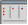
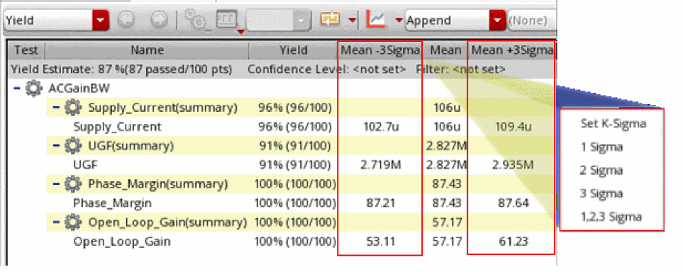
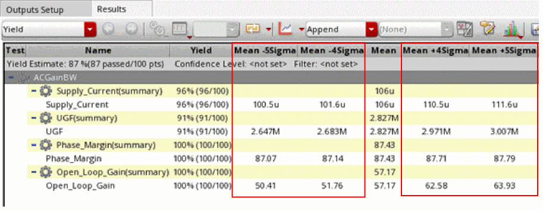

Displaying Mean K-Sigma and Median Columns in the Yield View
When you run a Monte Carlo simulation, the Mean -3Sigma, Mean +3Sigma, and Median columns are not displayed in the Yield view by default.
To display mean ±K-Sigma and Median columns in the Yield view:
-
In the Yield view of a Monte Carlo result, click Configure what is shown in the table 
and choose Mean +- K-Sigma, and Median.
Alternatively, you can also set the following environment variable to display mean ±K-Sigma columns.envSetVal("adexl.gui" "yieldViewShowDefault" 'string "\"Min\" \"Target\" \"Max\" \"Mean\" \"Median\" \"Std Dev\" \"Cpk\" \"Errors\" \"User-Defined Columns\" \"Mean +- K-Sigma\"")
The Mean -3Sigma and Mean +3Sigma columns are displayed to the left and to the right of the Mean column.
 -
Right-click either the Mean -3Sigma or the Mean +3Sigma column and choose one of the following options:
- 1 Sigma: Displays the Mean -Sigma and Mean +Sigma columns to the left and to the right of the Mean column.
- 2 Sigma: Displays the Mean -2Sigma and Mean +2Sigma columns to the left and to the right of the Mean column.
- 3 Sigma: Displays the Mean -3Sigma and Mean +3Sigma columns to the left and to the right of the Mean column.
- 1,2,3 Sigma: Displays the Mean -3Sigma, Mean -2Sigma, and Mean -Sigma columns to the left of the Mean column and Mean +Sigma, Mean +2Sigma, and Mean +3Sigma columns to the right of the Mean column.
-
Set K-Sigma: Opens the Set K-Sigma form where you can specify the K-Sigma value or a list of K-Sigma values in the K-Sigma field.
For example, if you specify4,5in this field, the Mean -5Sigma and Mean -4Sigma columns are displayed to the left of the Mean column and Mean +4Sigma and Mean +5Sigma columns are displayed to the right of the Mean column.You can also set the environment variableyieldViewKSigmato specify various K-Sigma values that you want to display as columns in the Yield view.
Related Topics
Return to top